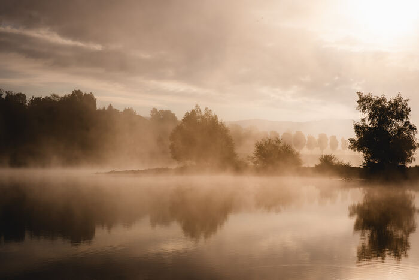
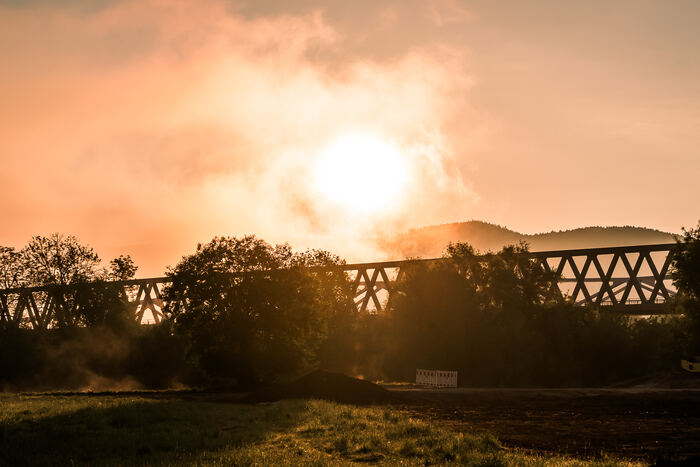
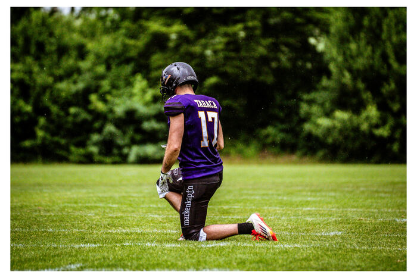
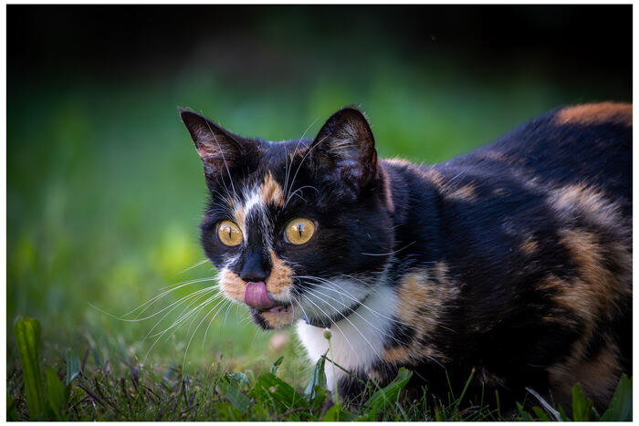
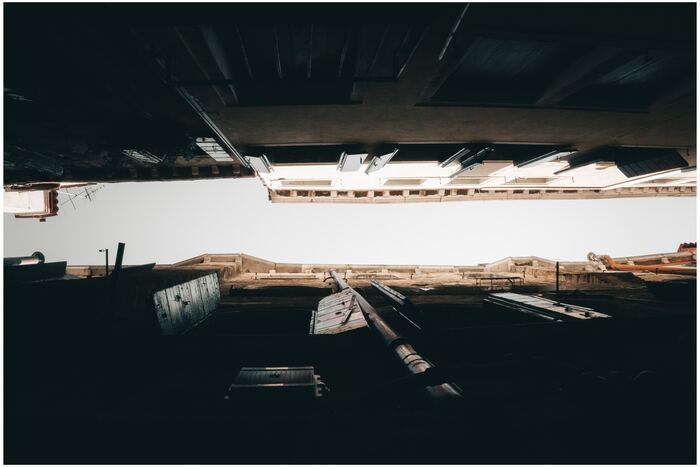
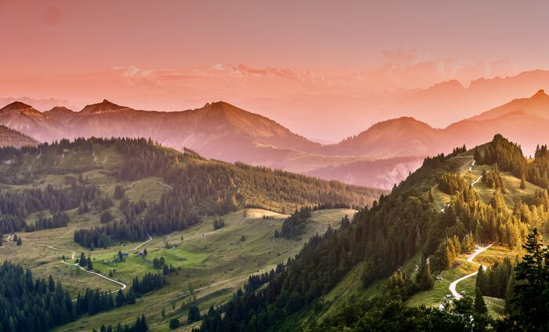
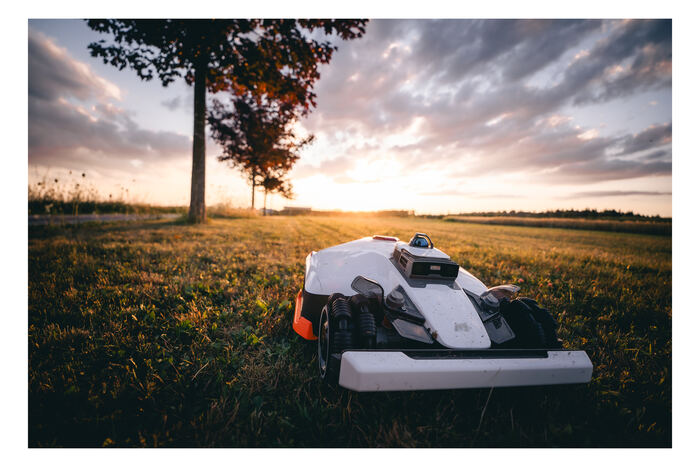
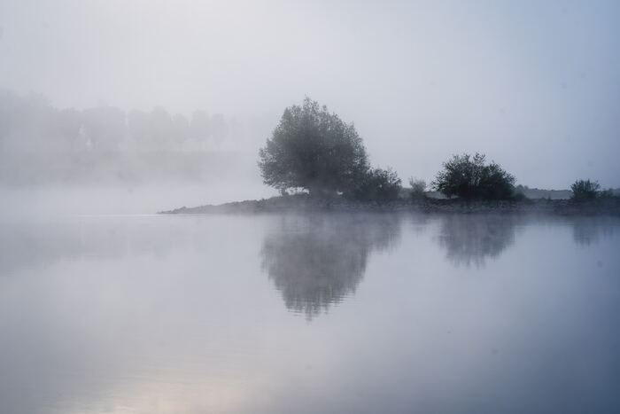

Effekt 01 · gefixt
Filmstreifen — durchgehende Bewegung
Jetzt startet der linke Rand schwarz, die Bilder ziehen schon beim Reinscrollen von rechts herein und laufen durchgehend weiter — nur wenn du scrollst.
Reinscrollen01


Ideenfindung · v3
Font Anton, Header C als Einstieg — jetzt mit deinen Korrekturen und neuen Ideen. Sag mir bei jedem Abschnitt: rein in V7 oder nicht.
Effekt 01 · gefixt
Jetzt startet der linke Rand schwarz, die Bilder ziehen schon beim Reinscrollen von rechts herein und laufen durchgehend weiter — nur wenn du scrollst.
ReinscrollenEffekt 02
Dein Favorit, bleibt. Fotos ziehen sich beim Reinscrollen wie ein Vorhang auf.
Langsam scrollen

Ein Blick, drei Welten — Natur, Architektur, Menschen.

Effekt 03 · gefixt
Der Text klebt jetzt vertikal zentriert (gleicher Abstand oben/unten) und geht am Ende sauber wieder mit nach oben.
Scrollen — links bleibt stehenSerie
Linien, Kanten, Perspektiven. Der Text steht still, deine Arbeiten laufen vorbei — der Leser bleibt bei dir.


Effekt 04
Das Konzept, das dich gepackt hat — davon gibt's jetzt mehr. Riesiges Wort nur als Umriss, das langsamer driftet als der Text.
DurchscrollenDer Umriss driftet, der Text zieht — zwei Tempi, viel Tiefe.
Effekt 05 · verbessert
Jetzt mit mehr und bewusst gewählten Bildern samt Bildunterschrift, statt zufällig gestreut.
Weiterscrollen

Effekt 06 · schneller
Deutlich schneller als vorher — wächst zügig auf ein Schlüsselbild zu.
DurchscrollenEffekt 06b · NEU
Du zoomst in ein Bild hinein — es wird riesig, und von innen taucht das nächste auf. Ein richtiger Übergangs-Effekt.
DurchscrollenEffekt 07 · scroll-gekoppelt
Jetzt direkt an dein Scrollen gekoppelt: Wort für Wort hellt der Satz auf, während du durchziehst.
Langsam scrollenIch fange Momente ein — am Boden und hoch in der Luft. Fotografie, Drohnenvideo und Design, die eine Geschichte erzählen.
Idee NEU · Video bleibt
Damit der Video-Effekt nicht verloren geht: nicht als Header, sondern als Banner mitten drin, sanft in Schwarz gefasst.
Video läuft in der SchriftIdee NEU · Stapel
Beim Scrollen schiebt sich jede Arbeit über die vorherige — gut, um eine Werkreihe kompakt zu zeigen.
WeiterscrollenEffekt 08
Läuft von selbst — zwei Reihen gegenläufig. Guter, ruhiger Übergang.
Läuft automatisch










Effekt 09
Bleibt perfekt: vier nebeneinander, dezente Entsättigung, beim Hovern Zoom + Name.
Über die Kacheln fahren


Sag mir zu jedem: rein oder raus. Dann baue ich die echte V7 mit Header C, Anton, deinen Lieblings-Effekten und dem Video-in-Schrift. Clean, nicht überladen.